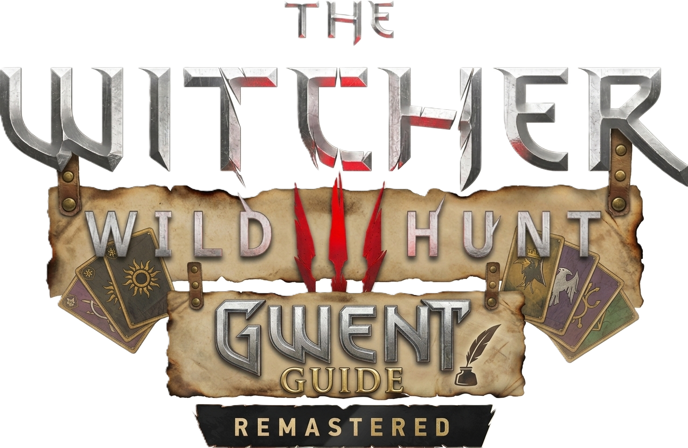
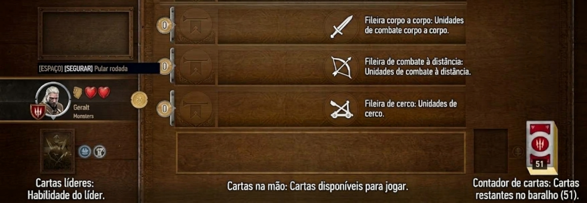
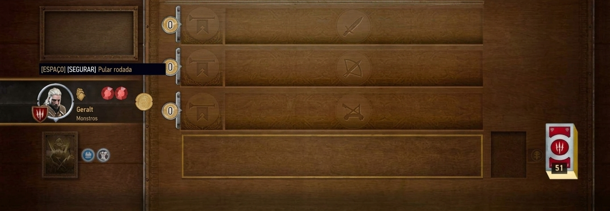

Fileira corpo a corpo
É a fileira identificada pelo símbolo da espada. Aqui são posicionadas as unidades de combate corpo a corpo.

Sua coleção, todas as cartas e o caminho para completar o baralho.
Conheça o jogo, entenda o tabuleiro e descubra como funcionam as cartas antes de experimentar uma partida.
Gwent é um jogo de cartas estratégico ambientado no universo de The Witcher. Em The Witcher 3: Wild Hunt, ele aparece como um minijogo no qual dois jogadores se enfrentam utilizando baralhos que representam diferentes facções desse universo.
Durante as partidas, você precisa administrar suas cartas, escolher o momento certo para jogar suas unidades e decidir quando vale a pena continuar disputando uma rodada ou guardar recursos para as próximas.
O jogo conta com cinco facções jogáveis: Reinos do Norte, Nilfgaard, Monstros, Scoia'tael e Skellige. Cada uma possui características próprias que influenciam a maneira de montar seu baralho e disputar as partidas.
Ao longo da aventura de Geralt, você pode desafiar mercadores, ferreiros, estalajadeiros e diversos outros personagens. Algumas partidas e missões também permitem obter novas cartas para ampliar sua coleção.
Antes de conhecer as cartas, vamos identificar as principais áreas do campo de batalha. A imagem abaixo será nosso mapa de referência.

É a fileira identificada pelo símbolo da espada. Aqui são posicionadas as unidades de combate corpo a corpo.
É a fileira identificada pelo símbolo correspondente ao combate à distância. As unidades dessa categoria são posicionadas aqui.
É a fileira identificada pelo símbolo da catapulta, destinada às unidades de cerco.
O retrato à esquerda representa o líder escolhido para a facção. A habilidade do líder depende da carta selecionada.
A área de cartas representa as cartas que ainda estão disponíveis para serem jogadas. Na demonstração interativa, esse número diminuirá conforme as cartas forem colocadas no campo.
O contador ao lado do líder indica quantas cartas ainda estão disponíveis no baralho para jogar.
A pontuação mostra a soma da força das unidades presentes nas três fileiras do seu campo.
Conheça as habilidades de Gwent e veja exemplos de cartas reais. As cartas abaixo são ilustrativas; cada habilidade será explicada antes dos exemplos.
Algumas cartas neutras aparecem com a aparência de uma facção específica na coleção. Aqui usamos a versão visual disponível nos arquivos do projeto.
Quando um espião é jogado no campo do adversário, ele aumenta a pontuação dele, mas permite que você compre duas cartas do seu próprio baralho. Espiões podem ser úteis para ganhar recursos e preparar as rodadas seguintes.


A habilidade de Médico permite escolher uma unidade que já esteja na pilha de descarte e colocá-la de volta no campo de batalha. A carta recuperada precisa respeitar as condições da habilidade.

.png)
Quando duas ou mais cartas com a mesma habilidade de Vínculo são colocadas na mesma fileira, a força dessas unidades aumenta. Quanto mais cartas compatíveis forem reunidas, maior será o efeito.

A habilidade de Moral aumenta a força das outras unidades da mesma fileira, sem aumentar a força da própria carta que concede o bônus.

As unidades ágeis podem ser colocadas na fileira corpo a corpo ou na fileira de combate à distância. A fileira escolhida pode fazer diferença para outras habilidades e efeitos.

As cartas de Herói são unidades especiais e não são afetadas pelas habilidades comuns de outras cartas nem pelos efeitos de clima. Elas continuam contribuindo com sua própria força para a pontuação da fileira.


As cartas de clima reduzem a força das unidades afetadas na fileira indicada: Frio Congelante afeta corpo a corpo, Nevoeiro afeta combate à distância e Chuva Torrencial afeta cerco. Tempo Claro remove os efeitos de clima. A Corneta do Comandante dobra a força das unidades da fileira escolhida. Dandelion é uma unidade com efeito de Corneta, aplicado à sua fileira.


A Isca permite devolver à mão uma unidade elegível que esteja no seu campo de batalha. Ela pode ser usada para recuperar uma unidade e jogá-la novamente, aproveitando seu efeito quando possível.

Queimar destrói as unidades mais fortes do campo de batalha quando elas atingem a maior força entre as unidades não heroicas, podendo afetar os dois lados. É importante conferir a força das cartas antes de jogar esse efeito.

A habilidade reúne e coloca no campo as cartas do seu baralho que correspondem ao grupo indicado pela carta. Vampira Lamia é um exemplo dessa habilidade.


.png)
.png)
Arraste uma carta da seleção para uma das três fileiras. Você também pode tocar em uma carta e depois escolher a fileira. O contador mostra quantas cartas ainda estão disponíveis, e a pontuação soma a força das unidades no campo.
Demonstração inicial com algumas cartas de Monstros e cartas neutras na aparência da facção Monstros. Os líderes ficam de fora nesta primeira versão.
Arraste uma unidade para a fileira compatível. Para usar clima ou Corneta, selecione a carta e clique em qualquer fileira. Frio afeta corpo a corpo, Nevoeiro afeta distância, Chuva afeta cerco; Tempo Claro remove o clima. A Corneta dobra a força da fileira escolhida. Para devolver uma unidade, clique nela no tabuleiro.

Escolha uma carta para começar.
Guias adicionais de Gwent e de The Witcher 3 Remastered.
O passo a passo escrito para encontrar e conquistar todas as cartas de Gwent ficará reunido aqui.
Os vídeos serão incorporados nesta mesma seção, junto do passo a passo escrito.